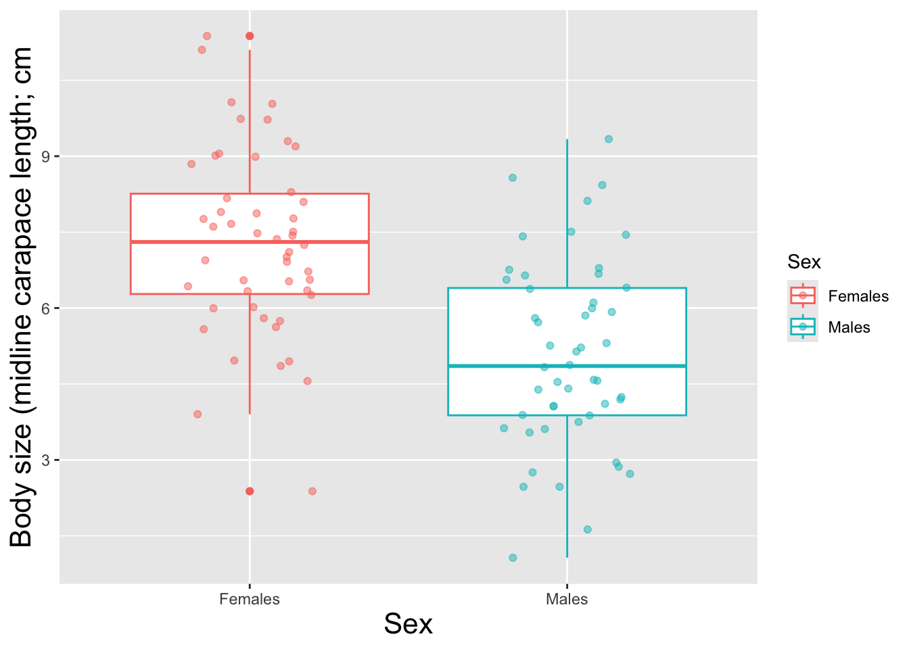
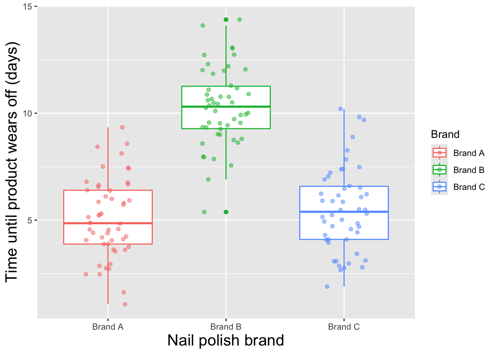
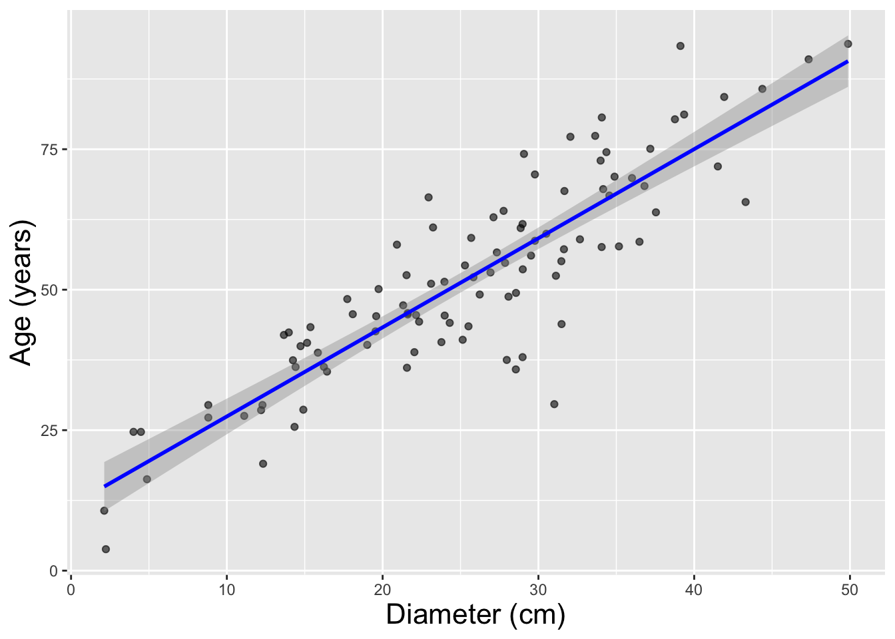
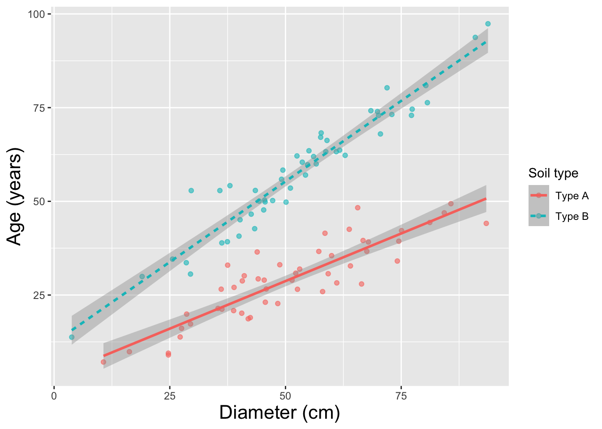
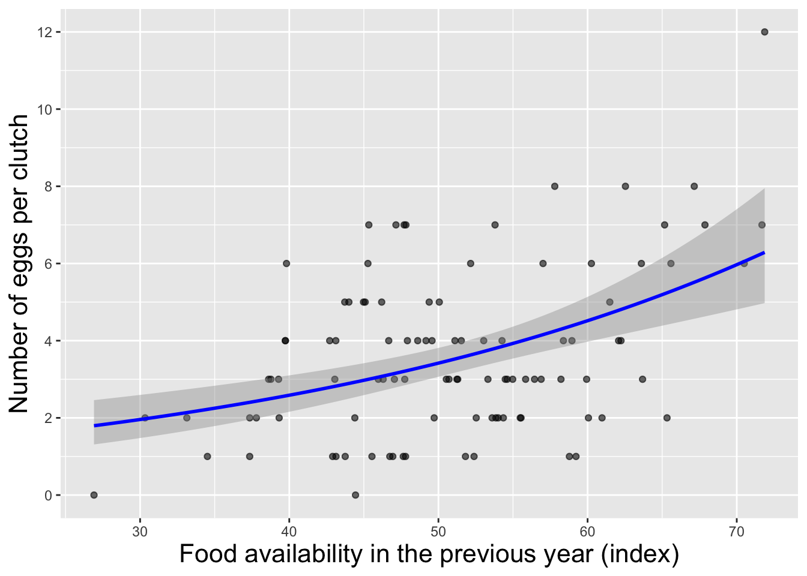
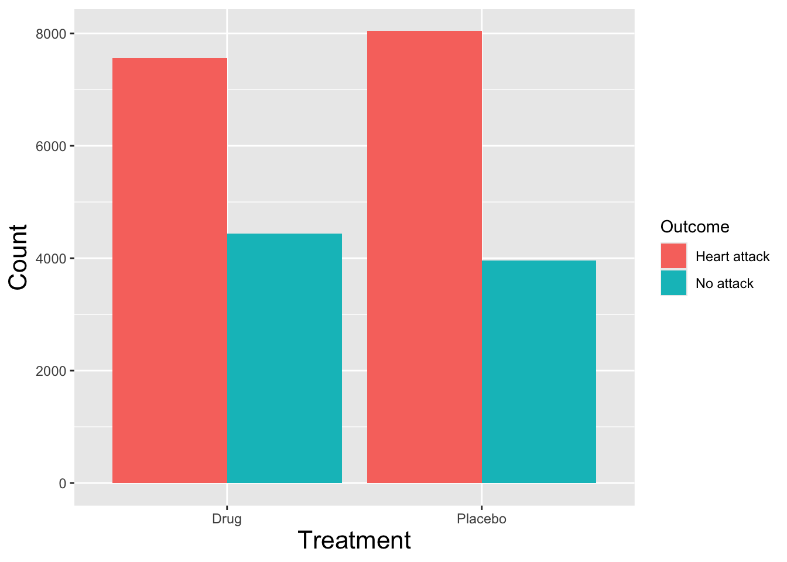
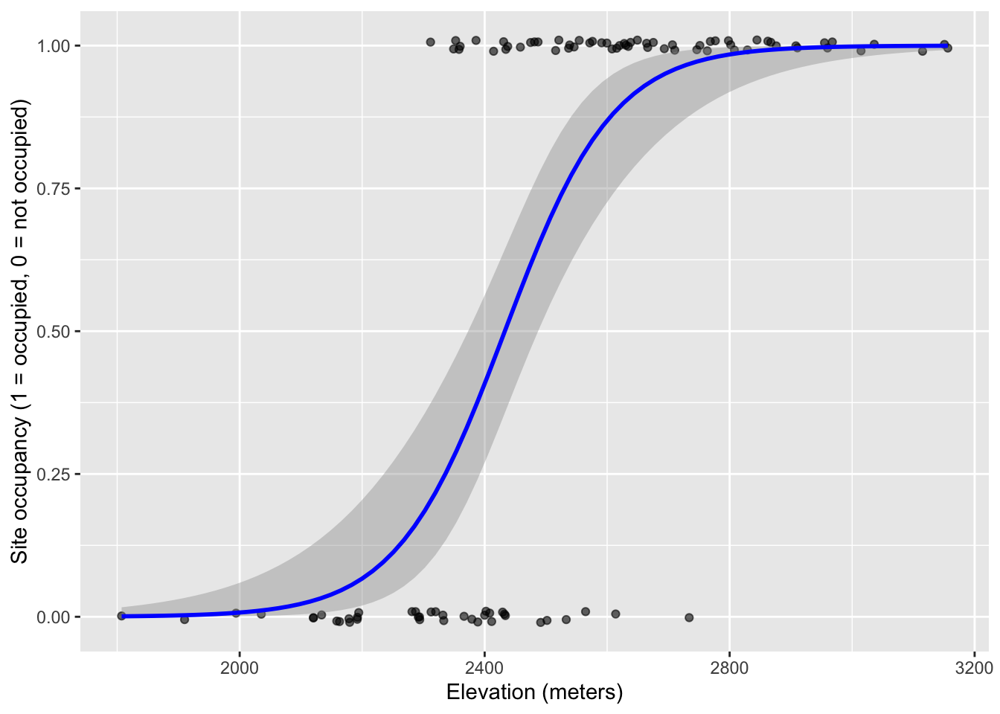

Before we delve into common statistical tests, let’s first take a high-level walk-through of the analyses we will cover in this class. As we do this, we will try to put these analysis into a framework – a field guide of sorts – that will help us to make sense of these methods and when to use them.
Before we do that, let’s briefly talk about parametric vs. nonparametric statistical tests.
As we saw in the last lecture, parameters are the arguments used to describe probability distributions. Parameters describe the exact shape and location of each distribution. Different probability distributions are associated with different parameters. For example, the normal distribution is described by two parameters: mean and standard deviation. The Poisson distribution has only one parameter, the Poisson mean (lambda; \(\lambda\)). The binomial distribution is described by two parameters: size (number of trials) and probability (success probability for each trial).
In parametric statistics, our statistical tests relate directly to the parameters of well-defined probability distributions (e.g., the mean of a normal distribution). That is, we assume a priori that our population follows this certain well-defined distribution (e.g., a normal distribution) and we make hypotheses about one or more of these parameters (often the mean of a normal distribution).
Because of the Central Limit Theorem (CLT), we have good reason (in many cases) to assume that our sampling distribution should follow a particular distribution (e.g., z, t, Chi-squared), even if the underlying data don’t perfectly match the underlying assumptions of the analysis. However, this is not always a fair assumption – sometimes the assumptions of parametric tests are clearly violated!!
We are fortunate that statisticians have developed a number of tests that do not depend on our data or data summaries following any defined probability distribution. These methods are the so-called distribution-free statistical tests, which are often referred to as non-parametric tests.
Unlike parametric statistics, nonparametric statistics do not require us to make strong assumptions, such as that the underlying statistical population follows a normal error distribution (like in a t-test or linear regression). Using these methods, we can still test similar (but not identical) hypotheses, even if our data do not meet standard parametric assumptions.
Confusingly, we often use the term “nonparametric” to refer to two
different classes of statistical models:
1. Statistical tests that do not require any assumptions about the
distribution of data or residuals. These methods are also known as
distribution-free tests.
2. Statistical models that do not require assumptions about the
shape of the relationship between two or more
variables. These methods include generalized additive models, spline
regressions, gaussian processes, and many methods collectively known as
machine learning (e.g., random forest). These methods
are often referred to as nonparametric regression.
In this class, we will mainly use the term ‘nonparameter statistics’ to refer to distribution-free tests (#1).
Q: Given the CLT makes many classical tests robust to non-normal data distributions, why do we need non-parametric statistics?
It is important to note that most classical parametric and nonparametric statistics all make one very important assumption – that observations are independent! Violation of this assumption are often called pseudoreplication and can cause issues with our type I error rates!
Let’s get back to our main purpose, which is to provide a “field guide” of sorts for determining which statistical analyses to run. This guide will involve characterizing the type of response variable and predictor variable we have at hand – most importantly, whether we have continuous or categorical data for our response and predictor variables.
If your response variable is continuous, common classical statistical analyses include: t-tests, analysis of variance (ANOVA), and linear regression. Each of these tests is associated with non-parametric alternatives. For the parametric tests, we are interested in testing if the population mean of the continuous response variable is affected by the predictor variables. Wish we to test the null hypothesis that is that there is no effect. Predictor variables, in turn, can be continuous or categorical (i.e., factor variables in R). Different predictor variable types will lead us to choose different statistical models!
If your categorical predictor variable is binary (two levels) and your response variable is continuous, you can use a two-sample t-test.
The non-parametric alternative is called the Mann-Whitney test.
You can visualize the effect size using a boxplot or barplot with error bars.
Example: Are female tortoises larger than males? The null hypothesis (\(H_{0}\)) is that there is no difference. Body size is the response variable and is continuous. Sex is the predictor variable and is a binary, categorial variable.

If your categorical predictor has more than two levels, you can use an Analysis of variance (ANOVA) followed by pairwise comparisons to test which categories differ from one another.
The non-parametric alternative is the Kruskal-Wallis test.
You can visualize these relationships with a boxplot or barplot with error bars.
Example: Do three different brands of nail polish differ in their durability? \(H_{0}\): no difference in durability among brands. The predictor variable (nail polish brand) is categorical, and the response variable (time until product wears off) is continuous.

If your predictor variable and response variable are both continuous, you can use linear regression analysis.
You can visualize the effect size using a scatterplot with a regression line and confidence “ribbon” (95% confidence intervals).
If you just want to know if two variables are correlated but you are not interested in modeling one (the response) as a function of another (the predictor) you can run a Pearson correlation test.
The non-parametric alternative to a Pearson correlation test is a Spearman rank-correlation test.
If you don’t want to assume a linear relationship, you can use polynomial regression, spline fits (GAM), or machine learning methods.
Example: What is the relationship between tree diameter and age? Can tree diameter be used to effectively predict the age of a tree? \(H_{0}\): no relationship between tree diameter and age. The predictor variable (age) is continuous, and the response variable (tree diameter) is also continuous.

Your response various is continuous as before, but now you have both a categorical and continuous variable that you hypothesize may be influencing the continuous response variable. The situation calls for Analysis of Covariance (ANCOVA).
More generally, if you have a set of continuous and categorical predictor variables that you hypothesize may be influencing your continuous response variable, you can use multiple linear regression.
You can visualize these relationships using boxplots and scatterplots with regression lines (and confidence intervals).
Practically speaking, linear regression and ANOVA/ANCOVA are two sides of the same coin. Both involve modeling the mean of a continuous response as a function of one or more predictor variables. Both assume an underlying normally distributed population.
You can run all of these analyses using the workhorse of linear
modeling in R, the lm() function. Basically, if you have a
continuous response variable, you can use the lm()
function!
Example: Is the relationship between tree diameter and age different depending on soil type? The response variable (tree diameter) is also continuous.

Linear regression is parametric and assumes the residuals (differences between observed data and predictions) are normally distributed. More generally, it assumes that the error distribution for the underlying population is normally distributed.
The non-parametric alternative might be something like a
distribution-free regression tree analysis (e.g.,
party() in R, which makes no assumptions about the
distribution of residuals or the shape of the relationship) or a
generalized additive model (GAM) (which assumes the
residuals follow a defined distribution, but makes not assumption about
the shape of the functional response).
With a discrete count response, you can either assume a continuous response variable and use the same techniques as you would for a continuous response (e.g., linear regression). If this is not justifiable, you can use generalized linear models (GLM) with an error distribution that follows a discrete probability distribution, such as a Poisson distribution (see previous lecture).
This type of relationship can be visualized with a scatterplot and regression line (with confidence band).
Generalized Linear Models (GLM) are a widely used parametric class of models that enable researchers to perform regression analysis while relaxing the assumption that residuals must be normally distributed. In GLM, residual error can be distributed according to discrete distributions like Bernoulli (binary), Binomial, Poisson and Negative Binomial – or according to non-normal continuous distributions like the Gamma or Exponential distributions.
Nonparametric options include classification/regression trees and GAM.
Example: does the number of eggs produced per year by a desert tortoise depend on the availability of food in the prior year?

If your response variable is categorical (factor variable, ordinal variable, binary variable) then your choice of statistical methods changes:
If both your response variable and your predictor variable are categorical, then you can use a Chi-squared (\(\chi^2\)) test or a Fisher’s exact test to test for an association between the two variables.
In this case, it can be informative to summarize your data as a contingency table like we did with the ‘lady tasting tea’ example. That is, we make a table that summarized the number of observation in each unique category of our response and predictor variables.
Example: test for an association between salamander color morph (melanistic vs. wild-type) and mating behavior (‘sneaker’ vs. territory holder).

If your response variable is binary (true/false, two levels) and your predictor variable is continuous, you can use logistic regression – which is a type of generalized linear model (GLM) that assumes a binary response distribution.
Example: Does the site occupancy for American Pika (Ochotona princeps) depend on elevation?

If your categorical response variable has more than two levels, you can use multinomial logistic regression (for categorical responses) or ordinal logistic regression (for ordinal responses). We don’t plan to explore these methods in this class, but it remains useful to know they exist!
Not all statistical tests fall into this neat hierarchy. Take a one-sample t-test for example. Imagine you are asking the question: Is the sample mean equal to 32? What exactly is the predictor variable?
Another example might be a normality test. We want to test if our data are normally distributed – again, what is the predictor variable in this case?
However, these tests might be useful for testing hypotheses in different contexts.
For the remainder of the class period, let’s discuss your final projects. Take a minute to think through your data set and try to determine: what is your response variable, what is your predictor variable? Are these data continuous or discrete? Based on the taxonomy, what analysis or analyses do you anticipate being useful for your project?